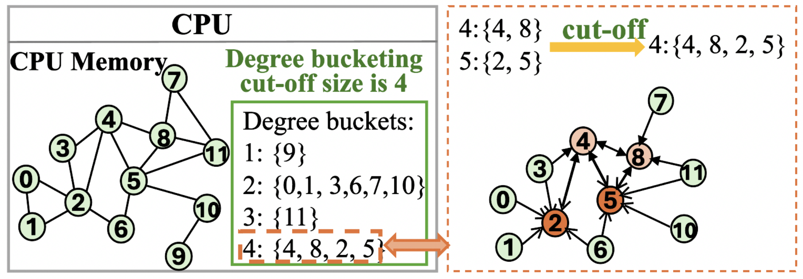

Dr. Minjia Zhang
Captain of SSAIL
Captain of SSAIL

Ph.D Student, Machine Learning Systems

Ph.D Student, Machine Learning Systems

Ph.D Student, Machine Learning Systems

MSCS Student, LLM Compression

MSCS Student, LLM Verifiability

MSCS Student, Machine Learning System

MSCS Student, Efficient 3D Object Detection
 |
MiLo: Efficient Quantized MoE Inference with Mixture of Low-Rank Compensators
Preprint [Project Page] |
 |
Universal Checkpointing: Efficient and Flexible Checkpointing for Large Scale Distributed Training
Preprint [Project Page] |
|  |
Buffalo: Enabling Large-Scale GNN Training via Memory-Efficient Bucketization
HPCA 2025 |